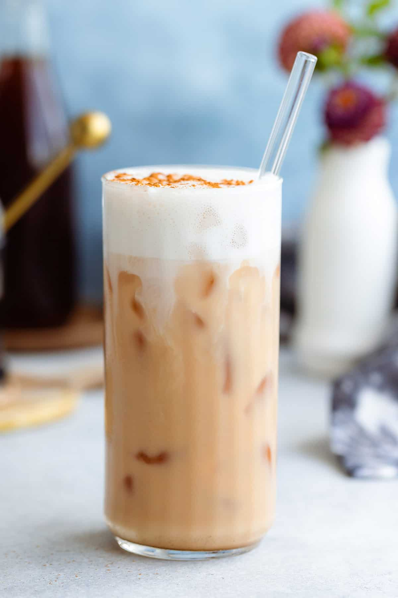

Home
Iced London Fog

Description
This iced London fog is a creamy Earl Grey tea iced latte with a hint of vanilla, as refreshing on a hot day as a cool mist.
Ingredients
- 3/4 cup water
- 1 Earl Grey tea bag
- 1 tablespoon vanilla syrup
- 1/2 cup milk
Directions
- Bring water to a boil; remove from heat and add tea bag. Steep for 5 minutes.
- Fill a tall glass with ice; pour tea over ice. Pour in milk and add vanilla syrup. Stir.